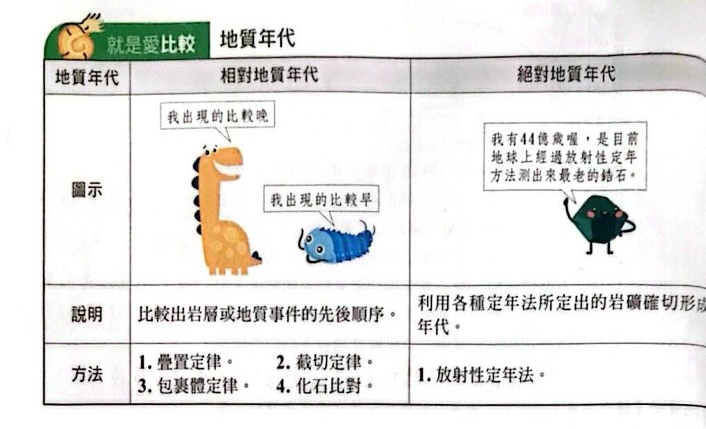
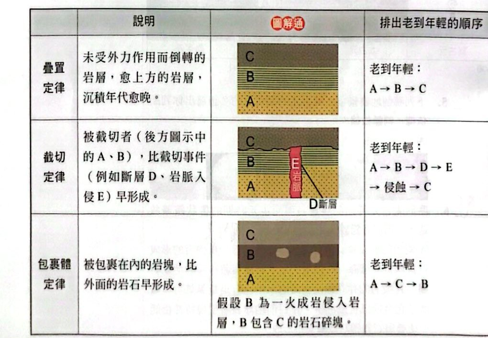
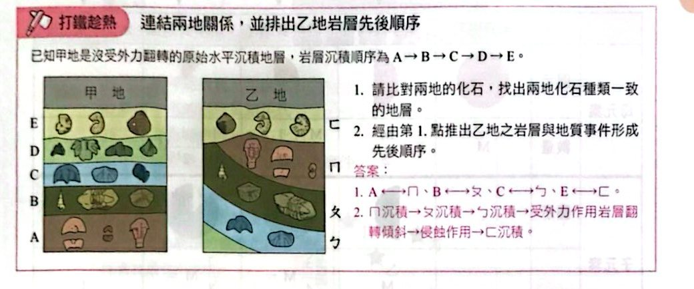
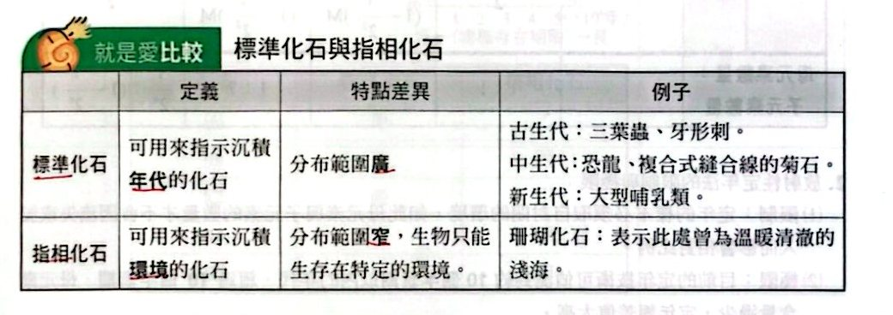
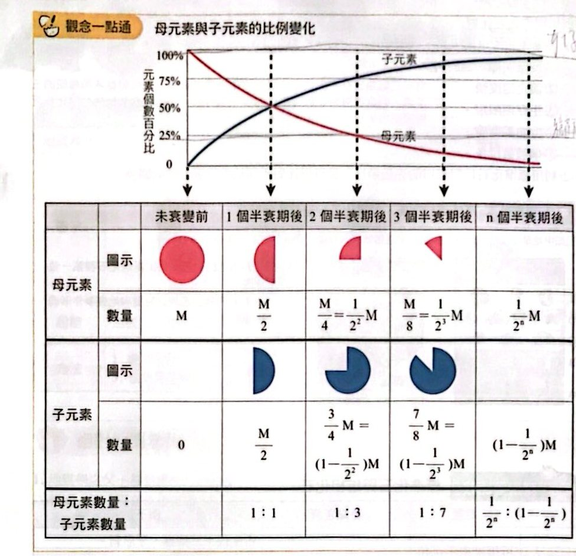
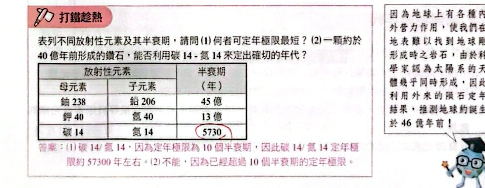

地質年代：相對 vs 絕對

就是愛比較：相對地質年代與絕對地質年代（講義 p.6）
相對地質年代
均變說：地質學之父—赫登提出：現在地球上所發生的地質作用，其方式與原理與過去均相同，即「現在是通往過去的鑰匙」。
可用來判斷岩層或地質事件先後順序的定律與原理：

疊置、截切、包裹體定律（講義 p.6）
標準化石（用化石比對地層）
標準化石：可用來指示沉積年代的化石，特點：
1. 特徵明顯，易於辨認。
2. 演化速度快。
3. 生存期限短。
4. 分布範圍廣。
5. 個體數目多。
（②③例：三葉蟲網在古生代期間快速演化出許多種類，可以從不同種類的三葉蟲判斷地層屬於古生代的哪一個時期，即演化速度快的生物化石可用來指示更短的生存年代範圍。）
利用標準化石比對岩層的先後順序，也可以比對不同地點岩層之間的關係。

打鐵趁熱：連結兩地關係並排出乙地岩層先後順序（講義 p.7）

就是愛比較：標準化石與指相化石（講義 p.7）
絕對地質年代
放射性元素定年的原理
- 不穩定的放射性元素稱為母元素，其會蛻變成另一個元素，蛻變後的元素稱為子元素。
- 放射性母元素數量蛻變到剩下一半時所經歷的時間稱為半衰期。
- 母元素減少的數量，即為子元素增加的數量。母元素＋子元素的數量＝原本母元素的數量。
- 計算母元素與子元素的比例，即可知道經歷了多久的時間。

觀念一點通：母元素與子元素的比例變化（講義 p.8）
放射性定年法的限制與極限
- 限制：定年的樣本必須取自封閉的環境，這樣母元素與子元素的數量才不會因流失或加入而影響相對比例。
- 極限：目前的定年技術可偵測到約 10 個半衰期以內的年代，超過 10 個半衰期，母元素含量過少，定年誤差值太高。

打鐵趁熱：不同放射性元素的定年極限（講義 p.8）
小試身手
小試 1地層剖面：相對年代與化石 （應選 2 項）
看答案與詳解收起
答(A)(D)
解這題在考什麼：疊置＋截切定律，並結合年代（乙＝中生代、戊含長毛象＝第四紀）判斷。
由下而上：乙（中生代）→ 丙 → 丁 → 戊（含長毛象，新生代第四紀）→ 己（最上）。
- (A) ○ 中生代的乙在最下、新生代的戊在上，順序合理，沒有倒轉。
- (B) ✗ 丙在乙（中生代）之上，比中生代更晚，不可能有古生代的三葉蟲。
- (C) ✗ 斷層切過戊（新生代地層），所以斷層晚於戊，可能形成於新生代。
- (D) ○ 丁介於乙（中生代）與戊（新生代）之間，有可能是中生代地層，因此可能找到菊石（中生代標準化石）。
- (E) ✗ 圖上無法判斷甲侵入體比斷層更晚；甲不一定是最晚的事件。
看答案與詳解收起
答(D)
解這題在考什麼：標準化石＝存在期限短＋分布範圍廣；指相化石＝分布範圍窄（只存在特定環境）。
- 圖中橫軸：存在期限（左短右長）；縱軸：分布範圍（上廣下窄）。
- 最佳標準化石：期限短且分布廣 ⇒ 位置在左上 ⇒ 丁。
- 最佳指相化石：分布範圍最窄 ⇒ 位置在最下 ⇒ 甲。
- 所以標準化石＝丁、指相化石＝甲 ⇒ (D)。
看答案與詳解收起
答見詳解（曲線由原點升起，6 千年＝50％、12 千年＝75％，漸近 100％）
解這題在考什麼：母元素＋子元素＝100％；每個半衰期，母元素減半、子元素補上減少的那一半。
由左圖：母元素 100％ → 6 千年 50％ → 12 千年 25％，所以半衰期＝6 千年。
| 時間（千年） |
0 |
6 |
12 |
18 |
24 |
| 母元素（％） |
100 |
50 |
25 |
12.5 |
6.25 |
| 子元素（％） |
0 |
50 |
75 |
87.5 |
93.75 |
畫法：縱軸標「子元素含量（％）」、橫軸標「時間（千年）」，曲線由原點出發向上彎，通過 (6, 50)、(12, 75)，愈來愈接近 100％（與母元素曲線互為鏡像）。
看答案與詳解收起
答(A)
解這題在考什麼：定年極限＝10 個半衰期；用母：子比例算年代。圖中半衰期＝6 千年。
- 定年極限約 10×6 千年＝6 萬年。
- (A) ✗ 1 億年遠超過 6 萬年，結果不可信。
- (B) ○ 母：子＝1：15 ⇒ 母占 1/16＝(1/2)⁴ ⇒ 4 個半衰期＝4×6 千＝2 萬 4 千年。
- (C) ○ 火成活動等可能擾亂系統，所測的不一定是最初形成的年齡。
- (D) ○ 不同岩石含的放射性元素不同，不是所有岩石都能用同一元素定年。
- (E) ○ 子元素多於母元素 ⇒ 母元素少於一半 ⇒ 已超過 1 個半衰期（6 千年）。
看答案與詳解收起
答(A) 9：1
解這題在考什麼：先用相對年代把岩脈的年代框起來，再換算成半衰期的幾分之幾。
- 岩脈截切頁岩與下方的熔岩流（236 百萬年前），而上方的熔岩流（232 百萬年前）未被岩脈截切 ⇒ 岩脈年代介於 232～236 百萬年前（約 2.3～2.4 億年前）。
- 鉀 40 半衰期約 12.5 億年，2.4 億年 ＜ 1 個半衰期（未及半衰期）⇒ 母元素還剩一半以上。
- 剩餘比例 ≈ (1/2)^(2.34/12.5) ≈ 0.88，子元素約 0.12 ⇒ 鉀 40：氬 40 ≈ 7：1，選項中最接近 (A) 9：1（其餘 1：1 需 12.5 億年、1：9 以下更久，都不可能）。
判斷技巧：年代遠小於半衰期 ⇒ 母元素還是絕大多數 ⇒ 母：子遠大於 1。
看答案與詳解收起
答(B)(D)
解這題在考什麼：沉積岩本身難以直接定年，要用上下的火成岩夾出年代範圍；以及碳 14 的定年極限。
地層由下而上：石灰岩 → 熔岩流（236 百萬年前） → 頁岩（內有牙形刺）→ 熔岩流（232 百萬年前） → 砂岩。
- (A) ✗ 粒徑粗細和地層是否倒轉無關；倒轉要看疊置關係、化石順序等。
- (B) ○ 石灰岩在 236 百萬年前熔岩流之下，頁岩在 236～232 百萬年前之間，所以石灰岩中的石燕早於頁岩中的牙形刺。
- (C) ✗ 岩層厚度與生物生存時間長短無關。
- (D) ○ 頁岩介於 236～232 百萬年前之間，牙形刺可能存活於 233 百萬年前。
- (E) ✗ 碳 14 的極限約 5.7 萬年，而本題是百萬年尺度，不能用碳 14 定年（而且碳酸鈣不是生物死亡時的含碳量）。